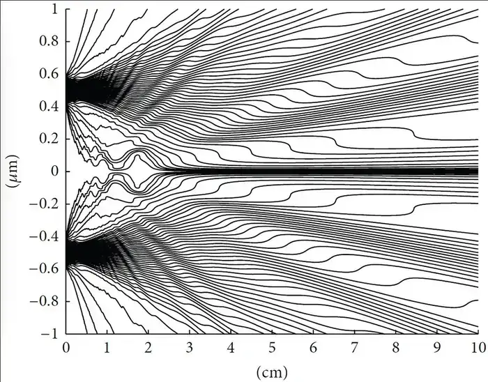
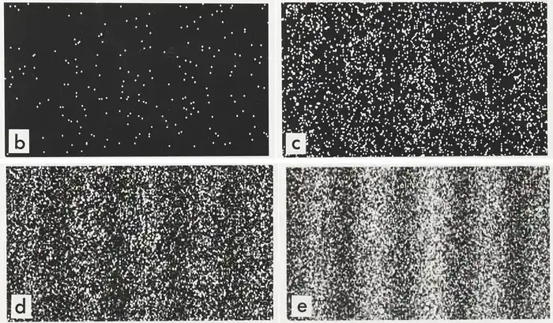

What the theory says
Louis de Broglie proposed in 1927 that a particle has both a real position and a wave that guides it; he abandoned the idea under criticism. David Bohm rebuilt it in 1952, and it became the standard example of a hidden-variable theory that works.
Maps, diagrams and images




The rule is simple: particles have definite positions at all times, and their motion is determined by the wavefunction through a guidance equation. There is no collapse and no fundamental randomness — the apparent randomness comes from not knowing the exact initial positions, which are distributed according to the Born rule.
Why it is not the mainstream view
The guidance equation is explicitly nonlocal: the motion of one particle depends on the positions of all the others, instantly, however far apart. That is exactly the kind of influence Bell's theorem showed any hidden-variable theory must have, so this is not a flaw — but it does mean the theory needs a preferred notion of simultaneity, a foliation of spacetime.
Making that relativistic has been the project ever since. There are versions (bohmian field theory, the Dirac sea reinterpretations, relativistic beables) that reproduce quantum field theory results in restricted settings; none is a clean, generally accepted relativistic formulation. That is the honest reason most physicists work with the instrumental formalism instead.
Predictions: identical to ordinary quantum mechanics, which means no experiment yet distinguishes them. That is not a weakness; it is the definition of an interpretation.
Virtues: no measurement problem, no collapse, no observer needed, and a clear account of why detectors click where they do.
Cost: an unobservable preferred frame, nonlocal dynamics, and a quantum equilibrium assumption that has to be postulated rather than derived.
A theory that cannot be distinguished by experiment is not thereby meaningless — but it is not science in the naive falsificationist sense either, and the archive labels it a live debate rather than a result.
Why it is in the archive
Because it is the strongest version of a claim the fringe gets wrong constantly. 'Quantum physics proves reality is a dream' and 'consciousness creates the world' are not what the formalism says; pilot-wave theory is one honest way of taking realism seriously, and it is taught in foundations courses.
It sits with objective collapse and quantum Darwinism as the three serious attempts to say what is actually happening between measurements.
Sources for this page
- Wikipedia, “De Broglie–Bohm theory” — formalism and historyen.wikipedia.org
- Bohm (1952), Physical Review 85, 166 — the reformulationdoi.org
- Stanford Encyclopedia of Philosophy, “Bohmian Mechanics”plato.stanford.edu
- Wikipedia, “Bell's theorem” — why any such theory must be nonlocalen.wikipedia.org
Open resources on this topic
- BookRelaxation to quantum equilibrium for Dirac fermions in the de Broglie-Bohm pilot-wave theory — Samuel Colin · 2011 (Internet Archive, free to read)
- BookQuantum theory of motion of a time-dependent harmonic oscillator in the pilot-wave theory (Internet Archive, free to read)
- BookComment on Valentini, "De Broglie-Bohm Pilot-Wave Theory: Many Worlds in Denial?" [arXiv:0811.0810] — Harvey R. Brown · 2009 (Internet Archive, free to read)
- PapersOpen-access articles: DOAJ · PubMed Central · Internet Archive Scholar
- BooksPublic-domain and borrowable copies: Open Library · Project Gutenberg · Google Books
Cite this page
Momin, S. (2026). Pilot-Wave Theory. The Larger World Archive. https://drsamonline.github.io/LARGE_GLOBE/pilot-wave.htmlMomin, Sohil. “Pilot-Wave Theory.” The Larger World Archive, 2026, https://drsamonline.github.io/LARGE_GLOBE/pilot-wave.html.Momin, Sohil. “Pilot-Wave Theory.” The Larger World Archive, 2026. https://drsamonline.github.io/LARGE_GLOBE/pilot-wave.html.@misc{pilotwave2026pilot,
author = {Momin, Sohil},
title = {Pilot-Wave Theory},
year = {2026},
howpublished = {The Larger World Archive},
url = {https://drsamonline.github.io/LARGE_GLOBE/pilot-wave.html},
note = {Last reviewed 20 November 2026}
}Last reviewed 20 November 2026 · Corrections policy · this page is not peer reviewed